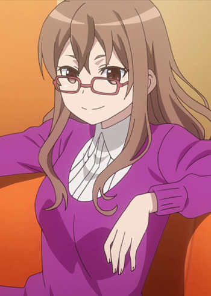

|
Alice Nakiri |
- Food Wars!
- Food Wars! OVA
- Food Wars! The Second Plate
- Food Wars! The Second Plate OVA
- Food Wars! The Third Plate
- Food Wars! The Third Plate: Totsuki Train Arc
|
Alice Nakiri is a highly skill chef that is currently at Tootsuki Culinary Academy. She is Erina's cousin. She is pushy, bossy and will do what it takes to get her way. She has a very demanding personality. Alice is extremely friendly and talkative. |
 |
Nurse Joy |
- Pokemon XY
- Pokemon XY: Mega Evolution
- Pokemon XYZ
|
Nurse is a recurring character in every Pokemon series. Their are multiple Nurse Joys in every region. She enjoys the work of medicine and loves Pokemon. She is extremely patient and caring. Nurse Joy is head of Pokemon Center. |
|  |
Miyu Shinohara |
- Sword Art Online Alternative: Gun Gale Online
|
Miyu Shinohara is a a long time of Karen Kohiruimaki. She plays Gun Gale Online under the name Fuaziroh. Miyu is a lively and friendly person who is a harecore VR gamer. |